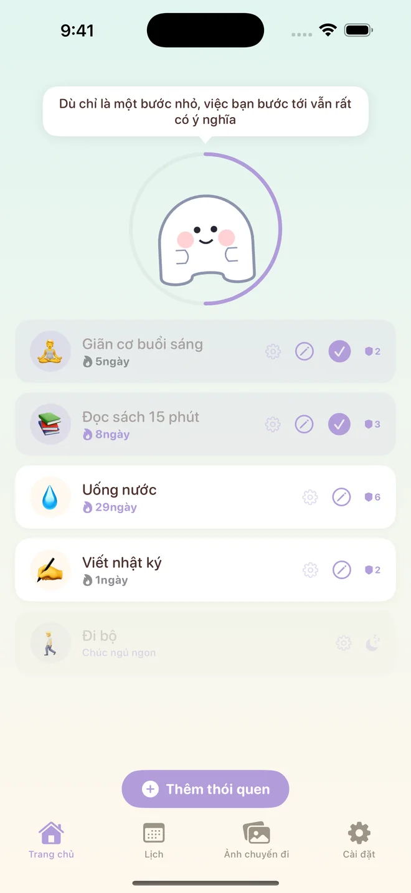
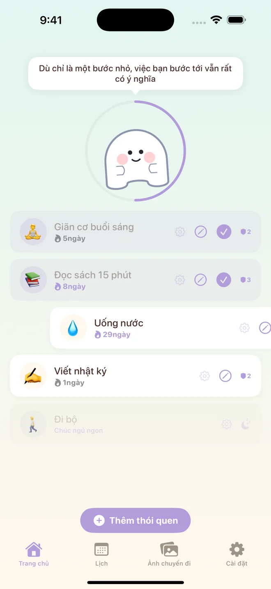
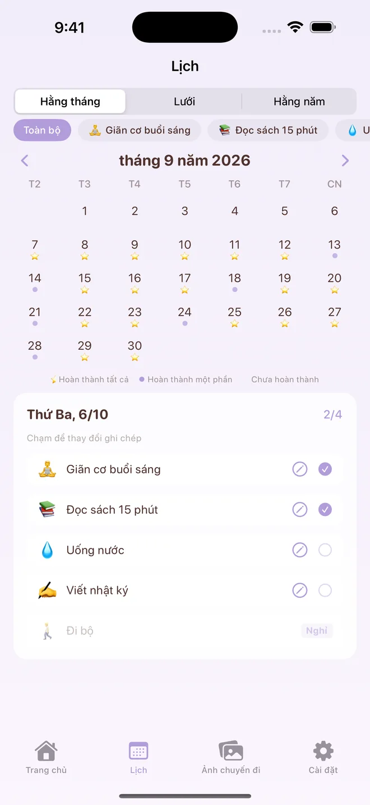

Hôm nay Marutto có cảm giác mình gặp may ghê! Chẳng có căn cứ gì đâu!
Người bạn thích trò chuyện. Thói quen thêm vui.
Biến thói quen
thành chuyến phiêu lưu.
Hoàn thành tất cả thói quen trong ngày để nhận một ảnh chuyến đi. Có Marutto cổ vũ và 250 ảnh để khám phá, mỗi bước nhỏ đều có niềm vui chờ đón.
iPhone và iPad / Miễn phí, có quảng cáo / Không cần tài khoản
Gặp Marutto
250ảnh chuyến đi để sưu tầm


Hôm nay Marutto có cảm giác mình gặp may ghê! Chẳng có căn cứ gì đâu!
250ảnh chuyến đi để khám phá
✓vuốt để ghi lại thành công
FREEmiễn phí, không cần tài khoản
MEET YOUR CHATTY LITTLE COMPANION
Người bạn thích trò chuyện.
Niềm vui gặp lại mỗi ngày.
Khen bạn, cổ vũ bạn, đôi lúc khiến bạn bật cười với một ý nghĩ ngộ nghĩnh. Marutto, chàng tiên thói quen, đồng hành cùng từng bước nhỏ. Hôm nay bạn ấy sẽ kể gì nhỉ?
Oa! Bạn làm “việc đọc sách” rồi! Marutto cảm động quá!
Nghỉ ngơi không phải điều xấu đâu. Marutto đảm bảo đấy!
Có đám mây đậu trên đỉnh Phú Sĩ, làm mình cũng muốn có một chiếc mũ.
Chọn một khoảnh khắc để khám phá chuyện trò của Marutto.
Ví dụ về lời nhắn có trong ứng dụng.
Một lời chào mỗi lần gặp.
Lời chào theo thời điểm trong ngày và các mùa. Vài ý nghĩ vu vơ có thể khiến bạn mỉm cười.
Cùng vui với từng thành công.
Dù là tiến bộ nhỏ, Marutto vẫn dành lời khen để bạn thêm mong chờ bước tiếp theo.
Bên bạn cả trong ngày nghỉ.
Khi mọi việc chưa như ý, có lời cổ vũ dịu dàng để bạn bắt đầu lại theo nhịp của mình.
01 — LITTLE BY LITTLE
Từng bước nhỏ.
Thêm lý do để mỉm cười.
Giãn cơ, đọc một trang sách, uống một cốc nước. Bắt đầu từ điều nhỏ bé, có Marutto bên bạn cổ vũ.
01

A SMALL STEP FORWARD
Hoàn thành!
Chỉ cần vuốt một lần.
Vuốt để đánh dấu thói quen đã hoàn thành. Bạn cũng có thể bỏ đánh dấu hoặc sửa ghi chép trước đây trên lịch.
Chạm để thử một thành công nho nhỏ
Bản minh họa trên trang web
Dù hôm nay bạn đã cố gắng hay chưa làm được như ý, Marutto vẫn luôn cổ vũ bạn.
EVERY LITTLE DAY COUNTS
Những ngày kiên trì
sẽ giúp bạn thêm tự tin.
Xem lại những gì bạn đã tích lũy mỗi ngày qua lịch tháng, lưới theo từng thói quen và ghi chép cả năm. Bạn cũng có thể thêm ghi chú cho từng thói quen.
02

02 — A WORLD OF LITTLE REWARDS
Thói quen mỗi ngày.
Thế giới đang chờ khám phá.
250✦
ảnh chuyến đi để sưu tầm


Duy trì thói quen, sưu tầm kỷ niệm.
Hoàn thành tất cả thói quen trong ngày để nhận một tấm ảnh chuyến đi. Thưởng thức 250 ảnh cùng nhật ký du lịch và những mẩu chuyện thú vị của Marutto. Bạn cũng có thể nhận ảnh thưởng bằng cách xem quảng cáo video.
Chia sẻ ảnh và nhật ký du lịch
Phóng to ảnh yêu thích rồi dùng nút chia sẻ để gửi ảnh và nhật ký. Bạn cũng có thể đính kèm liên kết ứng dụng và #MaruttoTracker.
03 — AT YOUR OWN PACE
Thói quen phù hợp với nhịp sống của bạn.
Theo nhịp sinh hoạt của bạn
Bạn có thể chọn các ngày thực hiện thói quen, giờ nhắc nhở và thời điểm kết thúc ngày. Tiện ích trên màn hình chính cũng cho phép bạn xem tình hình hoàn thành hôm nay.
Dùng khiên hỗ trợ chuỗi ngày liên tiếp
Duy trì 7 ngày để nhận một chiếc khiên. Bạn có thể bật hoặc tắt trong phần cài đặt tính năng giúp bảo vệ chuỗi ngày khi lỡ quên.
Hỗ trợ 18 ngôn ngữ và thiết lập khu vực
Bạn có thể sử dụng bằng ngôn ngữ mình chọn, từ giao diện, lời thoại của Marutto đến nhật ký du lịch.
Ứng dụng có miễn phí không?
Bạn có thể tải và sử dụng miễn phí. Ứng dụng có quảng cáo và video tùy chọn để nhận thêm ảnh chuyến đi.
Tôi có cần tạo tài khoản không?
Không cần tạo tài khoản. Ghi chép thói quen được lưu trên thiết bị. Dành cho iPhone và iPad chạy iOS 17 trở lên.